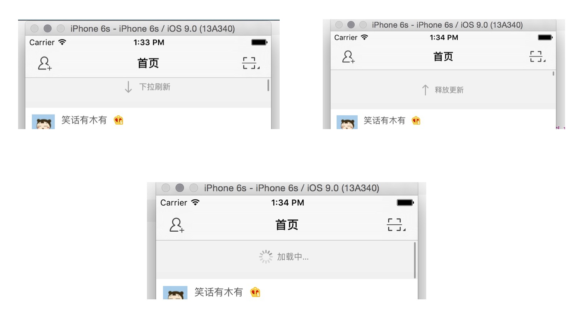

顶部的整个 View 会随着 tableView 的拖动而移动

HMRefreshControl)contentInset 的 top 值以让刷新控件显示出来HMRefreshControlclass HMRefreshView: UIControl {
override init(frame: CGRect) {
super.init(frame: frame)
// 先设置默认宽度与高度
self.width = SCREENW
self.height = 44
backgroundColor = RandomColor()
}
required init?(coder aDecoder: NSCoder) {
fatalError("init(coder:) has not been implemented")
}
}
// 下拉刷新控件
private lazy var hmRefreshControl: HMRefreshControl = HMRefreshControl()
...
// 添加头部视图
tableView.addSubview(hmRefreshControl)
运行测试
scrollView 属性// 定义 scrollView，用于记录当前控件添加到哪一个 View 上的
var scrollView: UIScrollView?
HMRefreshView 中监听其添加到 tableView 的滚动/// 当前 view 的父视图即将改变的时候会调用，可以在这个方法里面拿到父控件
override func willMoveToSuperview(newSuperview: UIView?) {
super.willMoveToSuperview(newSuperview)
// 如果父控件不为空，并且父控件是UIScrollView
if let scrollView = newSuperview where scrollView.isKindOfClass(NSClassFromString("UIScrollView")!) {
scrollView.addObserver(self, forKeyPath: "contentOffset", options: NSKeyValueObservingOptions.New, context: nil)
// 记录当前 scrollView，以便在 `deinit` 方法里面移除监听
self.scrollView = scrollView as? UIScrollView
}
}
/// 当值改变之后回调的方法
override func observeValueForKeyPath(keyPath: String?, ofObject object: AnyObject?, change: [String : AnyObject]?, context: UnsafeMutablePointer<Void>) {
printLog(change)
}
deinit{
// 移除监听
if let scrollView = self.scrollView {
scrollView.removeObserver(self, forKeyPath: "contentOffset")
}
}
注意：监听之后需要做两件事情：a.在合适的时候移除监听;b.一定要实现值改变之后的回调方法
// 取到顶部增加的可滑动的距离
let contentInsetTop = self.scrollView!.contentInset.top
// 取到当前 scrollView 的偏移 Y
let contentOffsetY = self.scrollView!.contentOffset.y
// printLog("contentInsetTop=\(contentInsetTop);contentOffsetY=\(contentOffsetY)")
// 通过分析可知：contentOffsetY 如果小于 (-contentInsetTop - 当前 View 高度)，就代表当前 View 完全显示出来
// 而 (-contentInsetTop - 当前 View 高度) 这个值就代表临界值
// 临界值
let criticalValue = -contentInsetTop - self.height
// 在用户拖动的时候去判断临界值
if scrollView!.dragging {
if contentOffsetY < criticalValue {
printLog("完全显示出来啦")
}else {
printLog("没有完全显示出来/没有显示出来")
}
}
enum HMRefreshControlStatus: Int {
case Normal = 0 // 默认状态
case Pulling = 1 // 松手就可以刷新的状态
case Refreshing = 2 // 正在刷新的状态
}
// 在用户拖动的时候去判断临界值
if scrollView!.dragging {
if contentOffsetY < criticalValue {
printLog("完全显示出来啦")
self.state = .Pulling
}else {
printLog("没有完全显示出来/没有显示出来")
self.state = .Normal
}
}
// MARK: - 懒加载控件
// 箭头图标
private lazy var arrowIcon: UIImageView = UIImageView(image: UIImage(named: "tableview_pull_refresh"))
// 显示文字的label
private lazy var messageLabel: UILabel = {
let label = UILabel()
label.text = "下拉刷新"
label.textColor = UIColor.grayColor()
label.font = UIFont.systemFontOfSize(12)
return label
}()
...
// 添加子控件
private func setupUI(){
backgroundColor = RandomColor()
// 添加控件
addSubview(arrowIcon)
addSubview(messageLabel)
// 添加约束
arrowIcon.snp_makeConstraints { (make) -> Void in
make.centerX.equalTo(self.snp_centerX).offset(-30)
make.centerY.equalTo(self.snp_centerY)
}
messageLabel.snp_makeConstraints { (make) -> Void in
make.leading.equalTo(arrowIcon.snp_trailing)
make.centerY.equalTo(arrowIcon.snp_centerY)
}
}
// 定义当前控件的刷新状态
var state: HMRefreshControlStatus = .Normal {
didSet{
switch state {
case .Pulling:
UIView.animateWithDuration(0.25, animations: { () -> Void in
self.arrowIcon.transform = CGAffineTransformMakeRotation(CGFloat(M_PI))
})
messageLabel.text = "释放更新"
case .Normal:
UIView.animateWithDuration(0.25, animations: { () -> Void in
self.arrowIcon.transform = CGAffineTransformIdentity
})
messageLabel.text = "下拉刷新"
default:
break
}
}
}
运行测试
Pulling 状态 (可以进入刷新的状态)// 在用户拖动的时候去判断临界值
if scrollView!.dragging {
if contentOffsetY < criticalValue {
printLog("完全显示出来啦")
self.state = .Pulling
}else {
printLog("没有完全显示出来/没有显示出来")
self.state = .Normal
}
}else{
// 判断如果用户已经松手，并且当前状态是.Pulling，那么进入到 .Refreshing 状态
if self.state == .Pulling {
printLog("进入刷新状态")
self.state = .Refreshing
}
}
// 1.懒加载控件
// 菊花转
private lazy var indecator: UIActivityIndicatorView = UIActivityIndicatorView(activityIndicatorStyle: UIActivityIndicatorViewStyle.Gray)
// 2.添加控件 & 设置约束
addSubview(indecator)
indecator.snp_makeConstraints { (make) -> Void in
make.center.equalTo(arrowIcon.snp_center)
}
// 3.在 state 为 Refreshing 状态时显示效果
case .Refreshing: // 显示刷新的效果
// 添加顶部可以多滑动的距离
UIView.animateWithDuration(0.25, animations: { () -> Void in
var contentInset = self.scrollView!.contentInset
contentInset.top += self.height
self.scrollView?.contentInset = contentInset
})
// 隐藏箭头
arrowIcon.hidden = true
// 开始菊花转
indecator.startAnimating()
// 显示 `加载中…`
messageLabel.text = "加载中…"
默认状态下显示箭头，隐藏菊花转case .Normal: // 置为默认的状态的效果
UIView.animateWithDuration(0.25, animations: { () -> Void in
self.arrowIcon.transform = CGAffineTransformIdentity
})
messageLabel.text = "下拉刷新"
arrowIcon.hidden = false
indecator.stopAnimating()
运行：测试发现当松手刷新的时候，显示的效果能出来，但是当一滑动的时候状态就发会了改变，而
Refreshing的状态改变是由数据刷新完成之后去重置，所以更改滑动时候的判断逻辑
正在刷新中的时候的状态异常改变// 在用户拖动的时候去判断临界值
if scrollView!.dragging {
if state == .Normal && contentOffsetY < criticalValue {
printLog("完全显示出来啦")
self.state = .Pulling
}else if state == .Pulling && contentOffsetY >= criticalValue {
printLog("没有完全显示出来/没有显示出来")
self.state = .Normal
}
}else{
// 判断如果用户已经松手，并且当前状态是.Pulling，那么进入到 .Refreshing 状态
if self.state == .Pulling {
self.state = .Refreshing
}
}
UIView.animateWithDuration(0.25, animations: { () -> Void in
var contentInset = self.scrollView!.contentInset
contentInset.top += self.height
self.scrollView?.contentInset = contentInset
}, completion: { (finish) -> Void in
// 模似 5 秒之后约束刷新
dispatch_after(dispatch_time(DISPATCH_TIME_NOW, Int64(5 * Double(NSEC_PER_SEC))), dispatch_get_main_queue()) { () -> Void in
// 设置状态为 默认状态
self.state = .Normal
// 重置contentInsetTop
UIView.animateWithDuration(0.25, animations: { () -> Void in
var contentInset = self.scrollView!.contentInset
contentInset.top -= self.height
self.scrollView?.contentInset = contentInset
})
}
})
运行测试
// 执行的对象
var target: AnyObject?
// 要执行的方法
var action: Selector?
hmRefreshControl.addTarget(self, action: "loadData", forControlEvents: UIControlEvents.ValueChanged)
case .Refreshing: // 显示刷新的效果
...
// 调用刷新的方法
sendActionsForControlEvents(.ValueChanged)
func endRefreshing(){
// 重置contentInsetTop
UIView.animateWithDuration(0.25, animations: { () -> Void in
var contentInset = self.scrollView!.contentInset
contentInset.top -= self.height
self.scrollView?.contentInset = contentInset
})
// 设置状态为 默认状态
self.state = .Normal
}
HMRefreshView 的 endRefreshing() 方法/// 结束刷新
private func endRefresh(){
pullupView.stopAnimating()
refreshView.endRefreshing()
}
运行测试：第一次启动的时候，刷新完毕，出现contentInset.top值递减问题，所以要判断如果之前状态是刷新状态，结束刷新才去更改contentInset.top
// 定义旧状态属性，保存上一次状态
var oldState: HMRefreshState?
// 在 `state` 的 `didSet` 方法末尾记录状态
// 定义当前控件的刷新状态
var state: HMRefreshState = .Normal {
didSet{
switch state {
case .Pulling: // 松手就可以刷新的状态
...
case .Normal: // 置为默认的状态的效果
...
case .Refreshing: // 显示刷新的效果
...
}
// 记录本次状态
oldState = state
}
}
刷新状态进入到默认状态就递减contentInset.top/// 结束刷新
func endRefreshing(){
if oldState == .Refreshing {
// 重置contentInsetTop
UIView.animateWithDuration(0.25, animations: { () -> Void in
var contentInset = self.scrollView!.contentInset
contentInset.top -= self.height
self.scrollView?.contentInset = contentInset
})
}
// 设置状态为 默认状态
self.state = .Normal
}
// 把结束刷新的逻辑，移动到 state 的 didSet 的 case .Normal 中
switch state {
case .Pulling: // 松手就可以刷新的状态
...
case .Normal: // 置为默认的状态的效果
...
// 如果之前状态是刷新状态，需要递减 contentInset.top
if oldState == .Refreshing {
// 重置contentInsetTop
UIView.animateWithDuration(0.25, animations: { () -> Void in
var contentInset = self.scrollView!.contentInset
contentInset.top -= self.height
self.scrollView?.contentInset = contentInset
})
}
case .Refreshing: // 显示刷新的效果
...
}
...
// 抽取之后的方法
func endRefreshing(){
// 设置状态为 默认状态
self.state = .Normal
}
运行测试